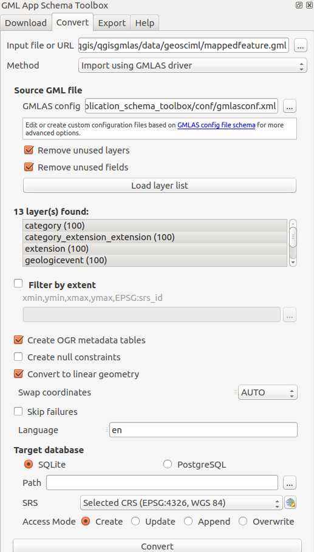
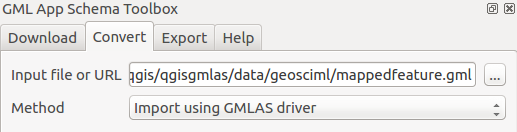
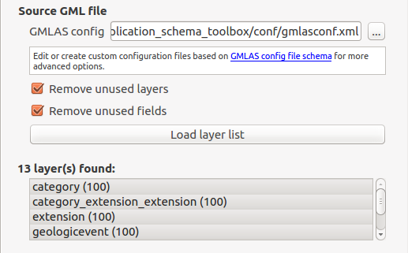
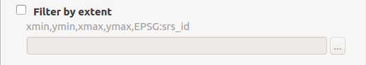
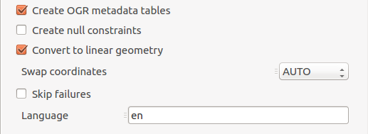
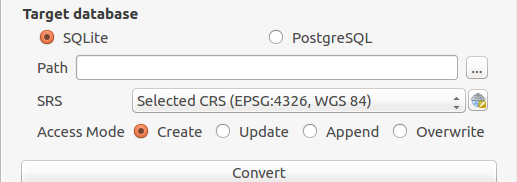
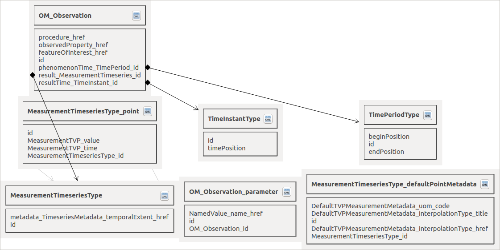

Convert GML App Schema files in PostGIS and SQLite format#
Context#
In a relational approach, the main problem is to convert from an XML flow of Complex Features instances to a relational database representation. The approach we followed consists in:
analyzing the XSD schema(s) declared by the XML instance in order to retrieve the underlying object model and determine the type of each element and attribute as well as links between elements;
converting links between elements into relations between database tables;
inserting values in the database corresponding to the values found in the XML instance;
generating a QGIS project configured to easily manipulate the relational model.
Using OGR GMLAS driver (default mode)#
OGR GMLAS driver is used to analyse XSDs and create the database model corresponding to the schema.
Converting an XML instance into a relational SQL model generates numerous tables and relations between them. In order to expose the entire relational model inside QGIS, all the tables of the database must be loaded (including tables without geometries) and links between them must be declared. QGIS has a concept of “relations” that allows to declare 1:N relations between vector layers. These relations can then be used in the form view of layers to navigate the model. The plugin developed automatically generates a QGIS project with all the layers loaded and all the known relations declared.
The plugin configuration is the following:

First, define the input document to convert to a database. The input can be:
A GML file available on the computer
A URL pointing to a GML file
An XSD file
In this last case, the XSD is analyzed to create the database structure with no data.

Then define the configuration on how to read the GML or XSD file.
The conversion is made by OGR and its GMLAS driver which provides advanced configuration using an XML file. Check the GMLAS driver XSD to discover all options available.
The plugin provides 2 configuration files:
gmlasconf.xml: which is the defaultgmlasconf-inspire.xml: which provide some specific configuration related to INSPIRE (ie. XLink resolution with the INSPIRE Registry)
Based on this configuration file, then some extra options are also defined in the user interface:
Remove unused layerswill clean up empty tables at the end of the processRemove unused fieldswill clean up empty columns at the end of the process
Those options are defined in the XML configuration but are overriden by the plugin when starting the conversion.
Click on the Load layer list button to analyze the GML and its XSD to list all layers availables.

User can optionally restrict to an area of interest by selecting the area on the map canvas:

More advanced options allow:
Create OGR metadata tables: OGR metadata tables. Those tables are required if you plan to write the database content back to GML.Create null constraint: Creation of database null checks. Turn this off to be less strict eg. when GML file may contains null values on XSD non null elements.Convert to linear geometry: Enable it to convert non-linear geometries types into linear geometries by approximating them. This is useful when database geometry type is more strict than the GML one. eg. enable it if ‘Cannot create geometry field of type MULTISURFACE’Swap coordinates: Depending on the spatial reference system (SRS), coordinate order is defined by the SRS code. It may happen that x and y are in wrong order as defined by the SRS (ie. the file is probably invalid). Use this option to swap coordinates.Skip failures: Continue after a failure, skipping the failed feature. Better not to use it for better performance.Language: For XLink resolution (eg. resources resolved from INSPIRE registry), define which language to use in HTTP header ‘Accep-Language’.

Finally, define the target database:

Relational schema visualisation#
The plugin also exposes a dialog that allows to display the relational model created. It is graphically represented by the different tables with links between them represented as arrows.

On each table, a button allows to directly open the attribute table of the given layer.
For the time being only file opened with PyXB mode can use the schema view. By future work, schema view may also support any databases schema (eg. PostGIS & SQLite created by the GMLAS driver).